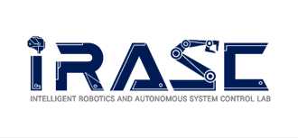
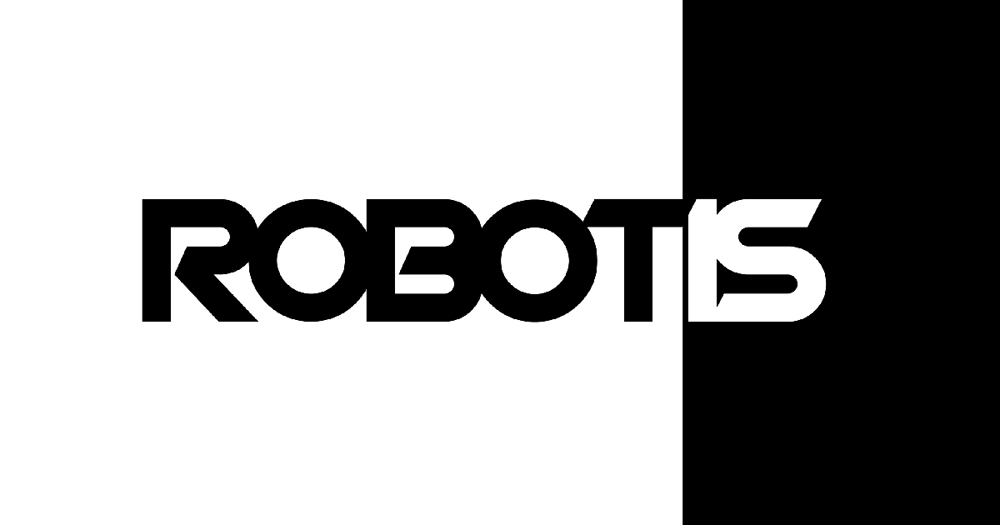
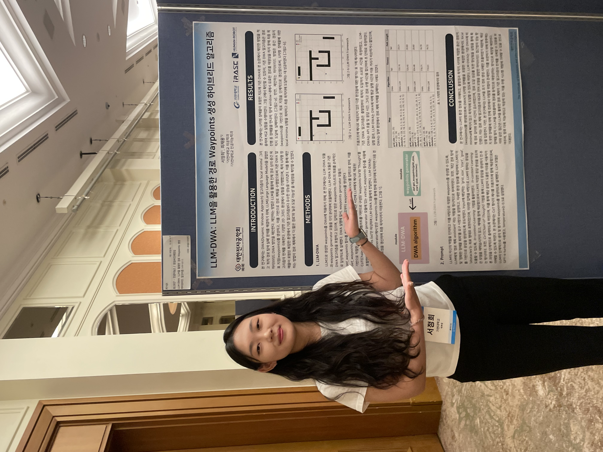
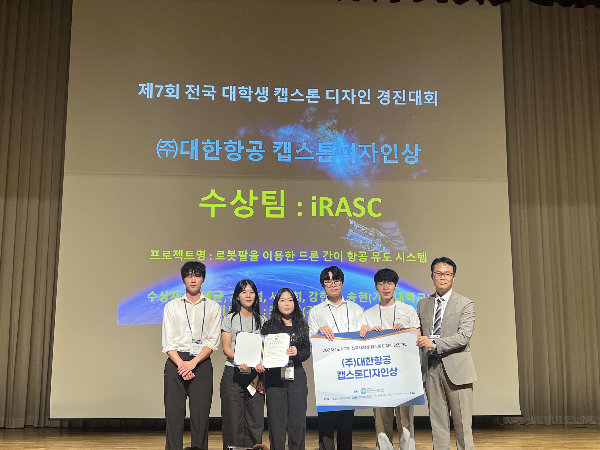
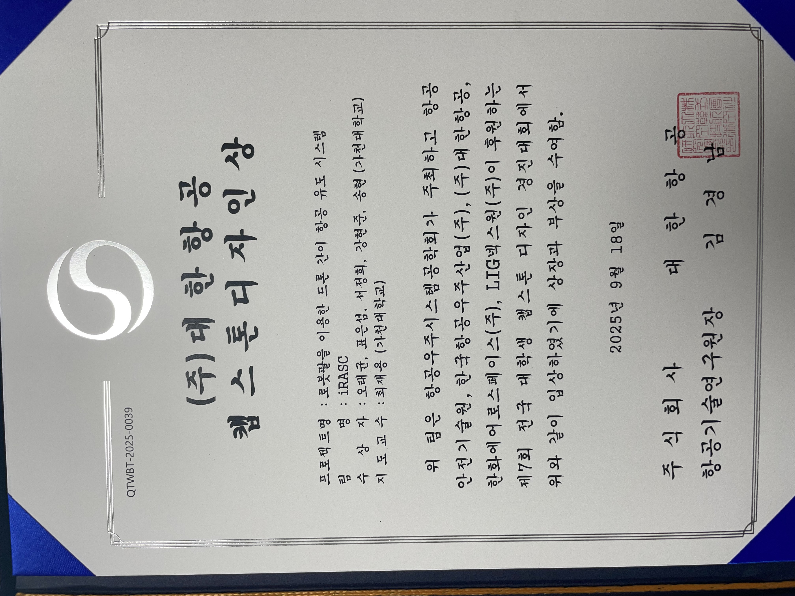
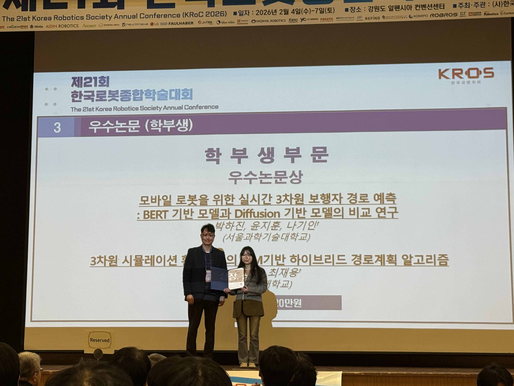
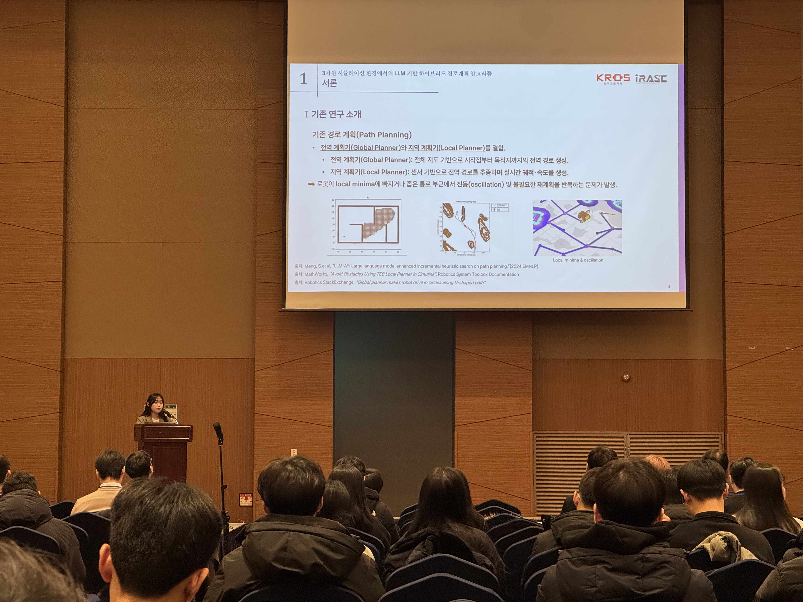

About Me
Hello! I am a robotics researcher interested in developing robots that can operate reliably in real-world environments, coexist with people, and contribute to improving their everyday lives.
My current research focuses on robot learning, legged locomotion, and navigation, with growing interests in mobile manipulation and embodied intelligence.
Ultimately, I hope to contribute to developing robots that can adapt to diverse environments and naturally interact and collaborate with people in the physical world.
Experience
Gachon University
B.S. in Biomedical Engineering | Mar 2022 - Feb 2026
M.S. in Artificial Intelligence | Mar 2026 - Present

iRASC Lab (Intelligent Robotics & Autonomous Systems Lab)
Undergraduate Researcher Assistant - M.S | Aug 2024 - Present

ROBOTIS OH! GYM! Cohort 1
Humanoid Trainer · iRASC Team | Jul 2026 - Aug 2026
Technical Skills
Programming
- Python, C++
Robotics & Learning
- Navigation, SLAM, Reinforcement Learning, Imitation Learning
Frameworks & Tools
- ROS, ROS2, Isaac Lab, MuJoCo, Gazebo, Docker, Git, Linux
Projects
Turtlebot3 Autorace
An autonomous driving project using a Turtlebot3 mobile robot to navigate a race track.
Key Contributions:
- Implemented track perception and color recognition for traffic lights.
- Developed auto-driving logic and performed camera calibration.
Tech Stack: Python, ROS1, Linux, Docker
Achievements: 🏆 Won the Encouragement Award at the 2024 Gachon University Robot Competition.
Specialized Medical Chatbot Web
Developed a web-based chatbot specialized in medical terminology to provide accurate information.
Key Contributions:
- Ensured domain expertise using RAG technology.
- Built the LLM-based web structure using LangGraph.
- Implemented STT summary feature for doctor consultations using Whisper.
Tech Stack: Python, FastAPI, LangGraph, Whisper, React, Vite, Docker
View Code View DemoLLM-DWA Hybrid Path Planning Framework
Proposed and developed a hybrid framework utilizing an LLM to solve the DWA algorithm's local minima problem in complex environments like U-shaped obstacles.
Key Contributions:
- Led the design of a Python-based framework.
- Engineered prompts for GPT-4 to generate optimal intermediate waypoints.
- Developed a 2D simulation to evaluate performance against baseline planners (Dijkstra + DWA).
Tech Stack: Python, LLM, Linux, Docker
Achievements: Poster presentation at IEIE.
View Paper View Code
Aircraft Marshalling Robot Arm Control via Imitation Learning
Developed a robotic arm system to perform aircraft marshalling gestures, based on an idea to replace the human role at airports.
Key Contributions:
- Trained and performed inference with the ACT imitation learning model.
- Designed and configured the simulation environment and settings.
Tech Stack: Python, ROS2, Imitation Learning, Linux, Docker
Achievements: 🏆 Won the Korean Air Capstone Design Award at the 7th National Undergraduate Capstone Design Contest hosted by the Society for Aerospace System Engineering.
View Demo

Autonomous Driving System for Unitree Go2
Built a framework for the Unitree Go2 quadruped robot to walk autonomously by recognizing floor colors.
Key Contributions:
- Implemented blue color segmentation using OpenCV.
- Converted Go2 control values to 'ros2 topic' messages.
- Established communication between ROS2 and Go2 using Cyclone DDS.
Tech Stack: Python, ROS2, OpenCV, Network, Linux, Docker
Achievements: 🏆 Won the Grand Prize at the Extreme Robotics Competition organized by the Korea Institute of Robotics and Technology Convergence.
View Code View Demo
LLM-based Hybrid Path Planning Algorithm in a 3D Simulation Environment
Proposed an LLM-based hybrid path planning algorithm that generates waypoints in a 3D simulation environment and integrates them with DWA to mitigate local minima and oscillation issues of conventional planners while improving navigation efficiency.
Key Contributions:
- Replaced the conventional global planner (e.g., Dijkstra/A*) with LLM-generated intermediate waypoints.
- Validated on TurtleBot3 in three Gazebo 3D environments (U-shaped corridor, maze-like world, house), achieving comparable path lengths while reducing navigation time by up to ~50%.
- Demonstrated robustness by uniquely succeeding in the maze scenario where Dijkstra+DWA/MPPI failed, with LLM inference taking only a few seconds, indicating practical online feasibility.
Tech Stack: Path Planning, LLM, SLAM, Python, ROS2, Linux, Docker
Achievements: 🏆 Received the Best Undergraduate Paper Award and delivered an oral presentation at KRoC 2026. Manuscript accepted to Scientific Reports.
View Demo View Code


LLM-WayNav: Validation-Gated LLM Waypoint Guidance for Robust Indoor Robot Navigation
Developed a hierarchical robot navigation framework that combines LLM-generated intermediate waypoints with conventional local planners, with validation-gated recovery for robust real-world navigation.
Key Contributions:
- Designed an LLM-based high-level waypoint planner integrated with ROS2 Nav2 local planners (DWB and MPPI).
- Developed a validation-gated recovery supervisor that detects invalid waypoints, no-path conditions, map changes, and stagnation, triggering re-validation or waypoint regeneration when necessary.
- Deployed the framework on a real Unitree Go2 and evaluated multiple LLM and local-planner configurations under real-world navigation conditions.
Tech Stack: Python, ROS2, Nav2, LLM, DWB, MPPI, Unitree Go2, Docker, Linux
View CodePublications
LLM-DWA: a hybrid path planning framework combining large language models with the dynamic window approach
Scientific Reports (Volume: 16, Article: 9898, 2026)